VOLUME 01UNIVERSITÀ DI ROMA TOR VERGATA · DIPARTIMENTO DI INFORMATICAEDIZIONE SPECIALE
GENDER & INCLUSION
CHI GIOCA · CHI VIENE RAPPRESENTATA · CHI CREA I GIOCHI
TEMA DEL GIORNO:
DONNE, GAMING & INCLUSIONE
Un ambiente tecnologico moderno è anche, automaticamente, inclusivo?
01 · CHI GIOCA
Le donne giocano già
Il 48% di chi gioca nel mondo è donna. Allora perché sono così poco visibili?
02 · TOSSICITÀ & VOICE CHAT
Il prezzo della visibilità
Basta accendere il microfono: molestie di genere e strategie per difendersi sparendo.
03 · INDUSTRIA & CARRIERE
Dietro lo schermo
48% del pubblico, 25% della forza lavoro: segregazione, pay gap ed eSports.
9 788899 012026
PREZZO: 0 €
AUTORI: LUCA, VALERIO, SAMUELE
MATRICOLE: 0342634 · 0349538 · 0348324
TIMELINE 1985–2023
Da oggetto a soggetto della narrazione
ESPORTS
Circuiti dedicati: un ponte, non una destinazione
02 | GENDER & INCLUSIONSOMMARIO // INDICE DEI CONTENUTI
INDICE DEGLI ARTICOLI
Sommario
Il filo del discorso
1Le donne giocano già
2Quando diventano visibili, pagano un prezzo
3Sullo schermo qualcosa è cambiato
4Dietro lo schermo, molto meno
5L'inclusione è una scelta di progetto
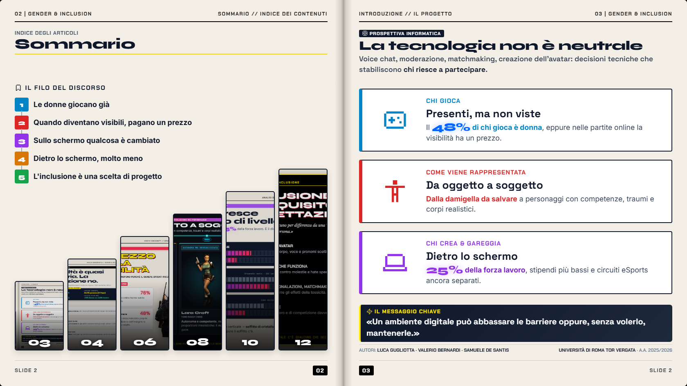
03
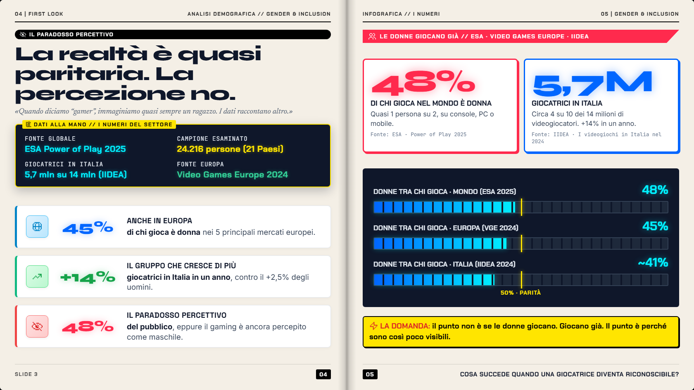
04
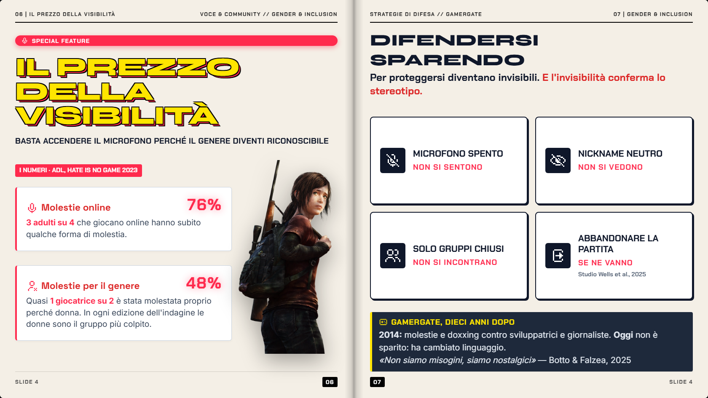
06
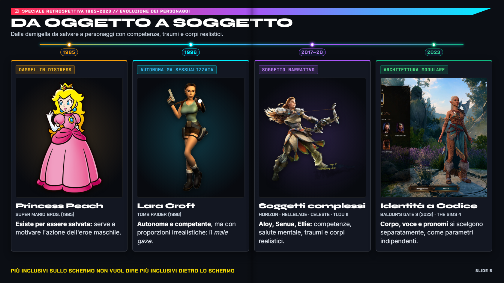
08
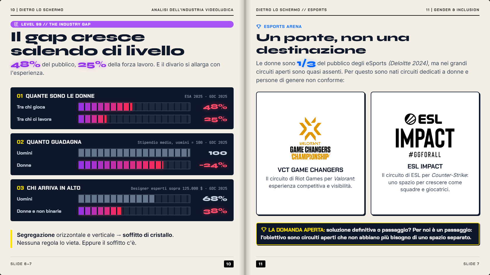
10
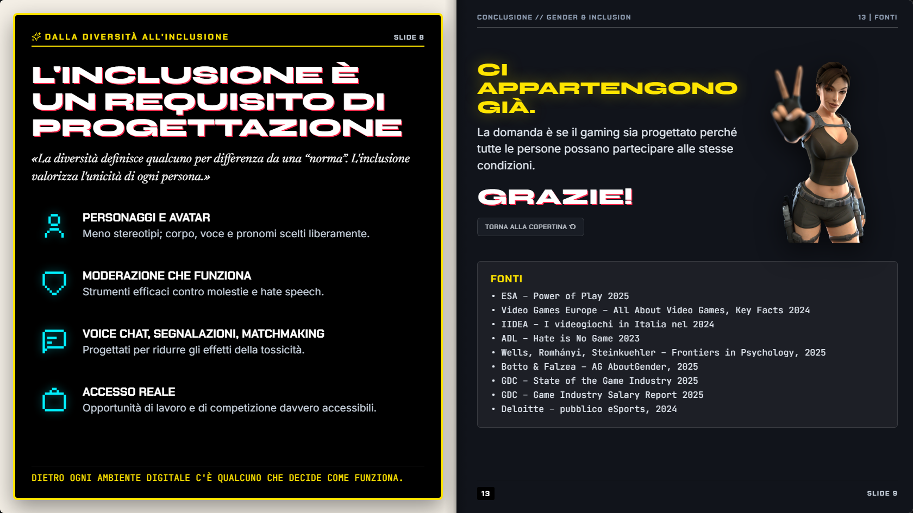
12
INTRODUZIONE // IL PROGETTO03 | GENDER & INCLUSION
PROSPETTIVA INFORMATICA
La tecnologia non è neutrale
Voice chat, moderazione, matchmaking, creazione dell'avatar: decisioni tecniche che stabiliscono chi riesce a partecipare.
CHI GIOCA
Presenti, ma non viste
Il 48%di chi gioca è donna, eppure nelle partite online la visibilità ha un prezzo.
COME VIENE RAPPRESENTATA
Da oggetto a soggetto
Dalla damigella da salvare a personaggi con competenze, traumi e corpi realistici.
CHI CREA & GAREGGIA
Dietro lo schermo
25%della forza lavoro, stipendi più bassi e circuiti eSports ancora separati.
IL MESSAGGIO CHIAVE
«Un ambiente digitale può abbassare le barriere oppure, senza volerlo, mantenerle.»
04 | FIRST LOOKANALISI DEMOGRAFICA // GENDER & INCLUSION
IL PARADOSSO PERCETTIVO
La realtà è quasi paritaria. La percezione no.
«Quando diciamo “gamer”, immaginiamo quasi sempre un ragazzo. I dati raccontano altro.»
DATI ALLA MANO // I NUMERI DEL SETTORE
FONTE GLOBALEESA Power of Play 2025
CAMPIONE ESAMINATO24.216 persone (21 Paesi)
GIOCATRICI IN ITALIA5,7 mln su 14 mln (IIDEA)
FONTE EUROPAVideo Games Europe 2024
45%
Anche in Europa
di chi gioca è donna nei 5 principali mercati europei.
+14%
Il gruppo che cresce di più
giocatrici in Italia in un anno, contro il +2,5% degli uomini.
48%
Il paradosso percettivo
del pubblico, eppure il gaming è ancora percepito come maschile.
INFOGRAFICA // I NUMERI05 | GENDER & INCLUSION
LE DONNE GIOCANO GIÀ // ESA · VIDEO GAMES EUROPE · IIDEA
48%
DI CHI GIOCA NEL MONDO È DONNA
Quasi 1 persona su 2, su console, PC o mobile.
Fonte: ESA · Power of Play 2025
5,7M
GIOCATRICI IN ITALIA
Circa 4 su 10 dei 14 milioni di videogiocatori. +14% in un anno.
Fonte: IIDEA · I videogiochi in Italia nel 2024
DONNE TRA CHI GIOCA · MONDO (ESA 2025)48%
DONNE TRA CHI GIOCA · EUROPA (VGE 2024)45%
DONNE TRA CHI GIOCA · ITALIA (IIDEA 2024)~41%
LA DOMANDA: il punto non è se le donne giocano. Giocano già. Il punto è perché sono così poco visibili.
06 | IL PREZZO DELLA VISIBILITÀVOCE & COMMUNITY // GENDER & INCLUSION SPECIAL FEATURE
IL PREZZO DELLA VISIBILITÀ
Basta accendere il microfono perché il genere diventi riconoscibile
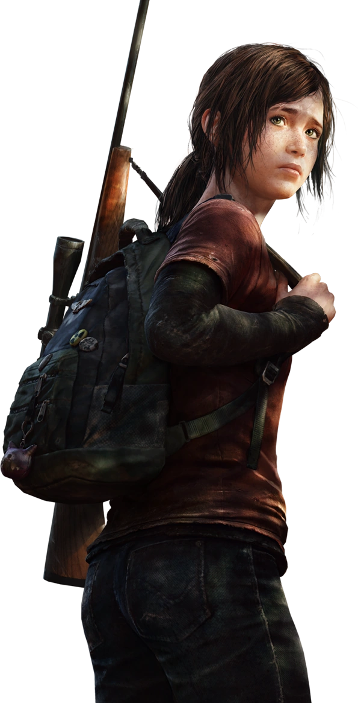
I NUMERI · ADL, HATE IS NO GAME 2023
Molestie online
76%
3 adulti su 4 che giocano online hanno subito qualche forma di molestia.
Molestie per il genere
48%
Quasi 1 giocatrice su 2 è stata molestata proprio perché donna. In ogni edizione dell'indagine le donne sono il gruppo più colpito.
STRATEGIE DI DIFESA // GAMERGATE07 | GENDER & INCLUSION
Difendersi sparendo
Per proteggersi diventano invisibili. E l'invisibilità conferma lo stereotipo.
Microfono spento
Non si sentono
Nickname neutro
Non si vedono
Solo gruppi chiusi
Non si incontrano
Lasciare la partita
Se ne vannoStudio Wells et al., 2025
GAMERGATE, DIECI ANNI DOPO
2014: molestie e doxxing contro sviluppatrici e giornaliste. Oggi non è sparito: ha cambiato linguaggio. «Non siamo misogini, siamo nostalgici» — Botto & Falzea, 2025
08-09 | GENDER & INCLUSIONSPECIALE EVOLUZIONE DEI PERSONAGGI // 1985 – 2023
SPECIALE RETROSPETTIVA 1985–2023 // EVOLUZIONE DEI PERSONAGGI
Da oggetto a soggetto
Dalla damigella da salvare a personaggi con competenze, traumi e corpi realistici.
1985
1996
2017–20
2023
DAMSEL IN DISTRESS
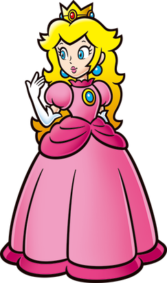
Princess Peach
Super Mario Bros. (1985)
Esiste per essere salvata: serve a motivare l'azione dell'eroe maschile.
AUTONOMA MA SESSUALIZZATA
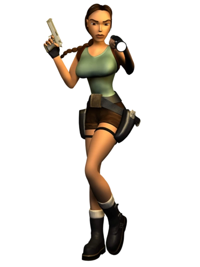
Lara Croft
Tomb Raider (1996)
Autonoma e competente, ma con proporzioni irrealistiche: il male gaze.
SOGGETTO NARRATIVO
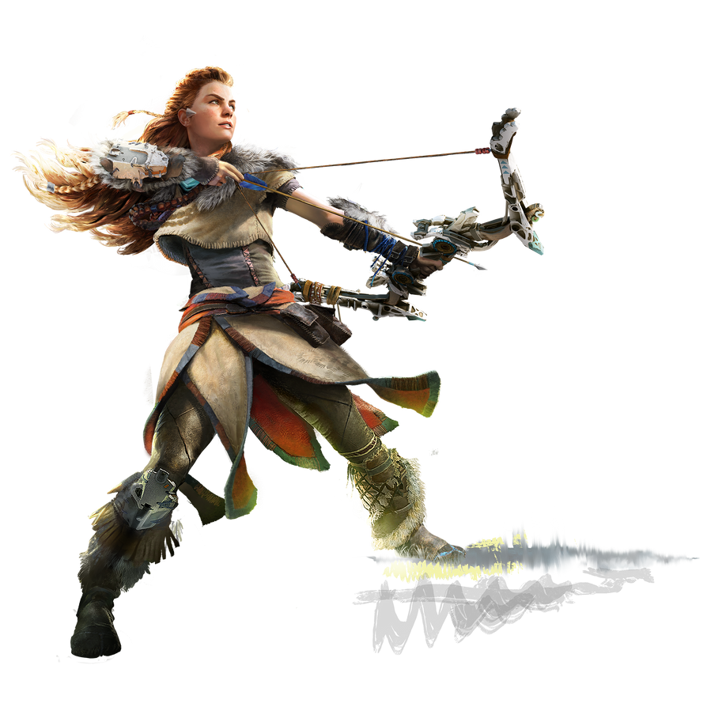
Soggetti complessi
Horizon · Hellblade · Celeste · TLOU II
Aloy, Senua, Ellie: competenze, salute mentale, traumi e corpi realistici.
ARCHITETTURA MODULARE
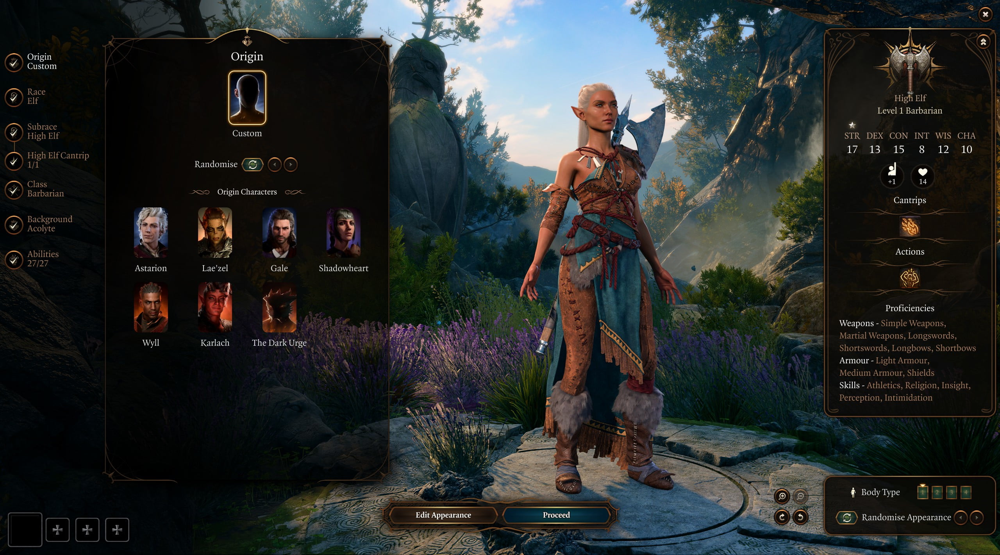
Identità a Codice
Baldur's Gate 3 (2023) · The Sims 4
Corpo, voce e pronomi si scelgono separatamente, come parametri indipendenti.
10 | DIETRO LO SCHERMOANALISI DELL'INDUSTRIA VIDEOLUDICA LEVEL 99 // THE INDUSTRY GAP
Il gap cresce salendo di livello
48% del pubblico, 25% della forza lavoro. E il divario si allarga con l'esperienza.
01 Quante sono le donne ESA 2025 · GDC 2025
Tra chi gioca
48%
Tra chi ci lavora
25%
02 Quanto guadagna Stipendio medio, uomini = 100 · GDC 2025
Uomini
100
Donne
−24%
03 Chi arriva in alto Designer esperti sopra 125.000 $ · GDC 2025
Uomini
68%
Donne e non binarie
38%
Segregazione orizzontale e verticale → soffitto di cristallo. Nessuna regola lo vieta. Eppure il soffitto c'è.
DIETRO LO SCHERMO // ESPORTS11 | GENDER & INCLUSION
ESPORTS ARENA
Un ponte, non una destinazione
Le donne sono 1/3 del pubblico degli eSports (Deloitte 2024), ma nei grandi circuiti aperti sono quasi assenti. Per questo sono nati circuiti dedicati a donne e persone di genere non conforme:
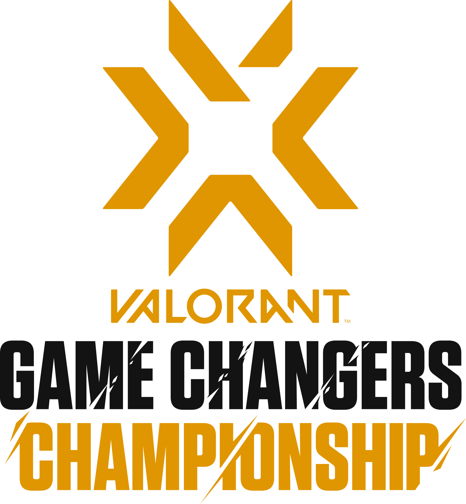
VCT GAME CHANGERS
Il circuito di Riot Games per Valorant: esperienza competitiva e visibilità.
ESL IMPACT
Il circuito di ESL per Counter-Strike: uno spazio per crescere come squadre e giocatrici.
LA DOMANDA APERTA: soluzione definitiva o passaggio? Per noi è un passaggio: l'obiettivo sono circuiti aperti che non abbiano più bisogno di uno spazio separato.
DALLA DIVERSITÀ ALL'INCLUSIONESLIDE 8
L'INCLUSIONE È UN REQUISITO DI PROGETTAZIONE
«La diversità definisce qualcuno per differenza da una “norma”. L'inclusione valorizza l'unicità di ogni persona.»
PERSONAGGI E AVATAR
Meno stereotipi; corpo, voce e pronomi scelti liberamente.
MODERAZIONE CHE FUNZIONA
Strumenti efficaci contro molestie e hate speech.
VOICE CHAT, SEGNALAZIONI, MATCHMAKING
Progettati per ridurre gli effetti della tossicità.
ACCESSO REALE
Opportunità di lavoro e di competizione davvero accessibili.
DIETRO OGNI AMBIENTE DIGITALE C'È QUALCUNO CHE DECIDE COME FUNZIONA.
CONCLUSIONE // GENDER & INCLUSION13 | FONTI
CI APPARTENGONO GIÀ.
La domanda è se il gaming sia progettato perché tutte le persone possano partecipare alle stesse condizioni.
GRAZIE!
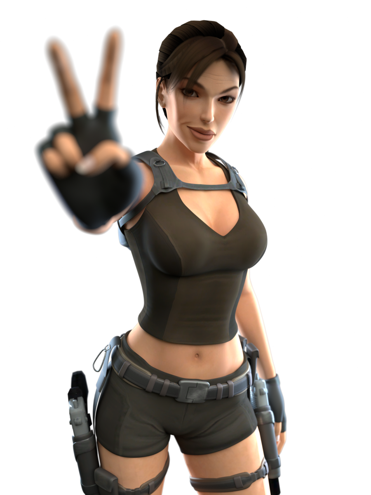
Fonti
• ESA – Power of Play 2025
• Video Games Europe – All About Video Games, Key Facts 2024
• IIDEA – I videogiochi in Italia nel 2024
• ADL – Hate is No Game 2023
• Wells, Romhányi, Steinkuehler – Frontiers in Psychology, 2025
• Botto & Falzea – AG AboutGender, 2025
• GDC – State of the Game Industry 2025
• GDC – Game Industry Salary Report 2025
• Deloitte – pubblico eSports, 2024